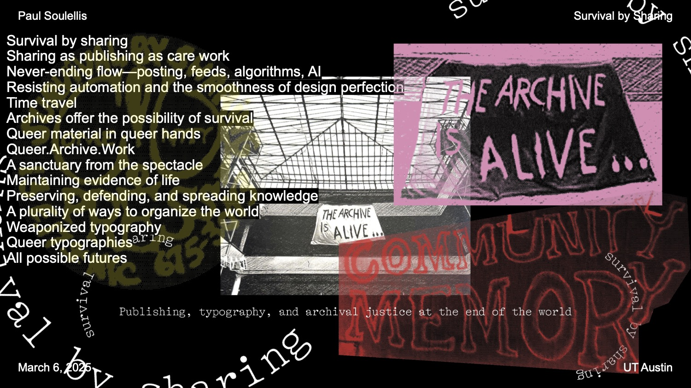
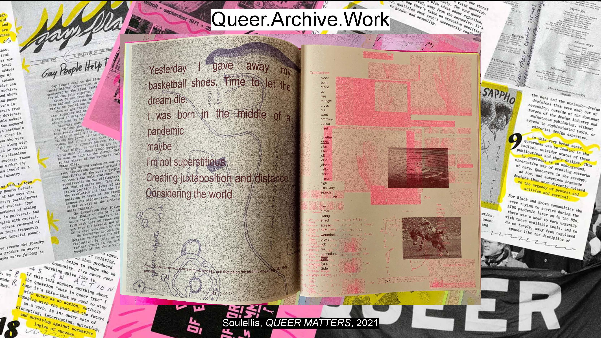
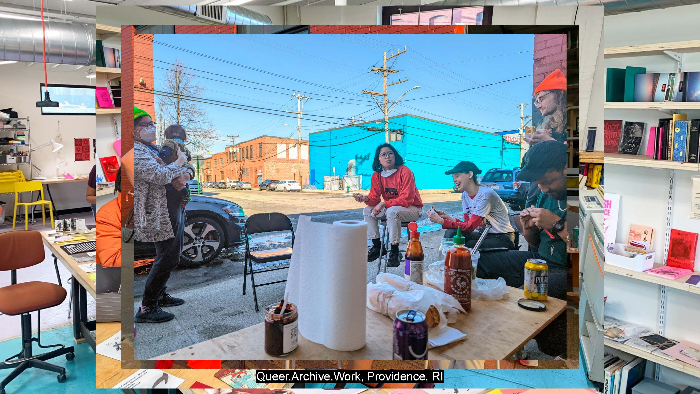
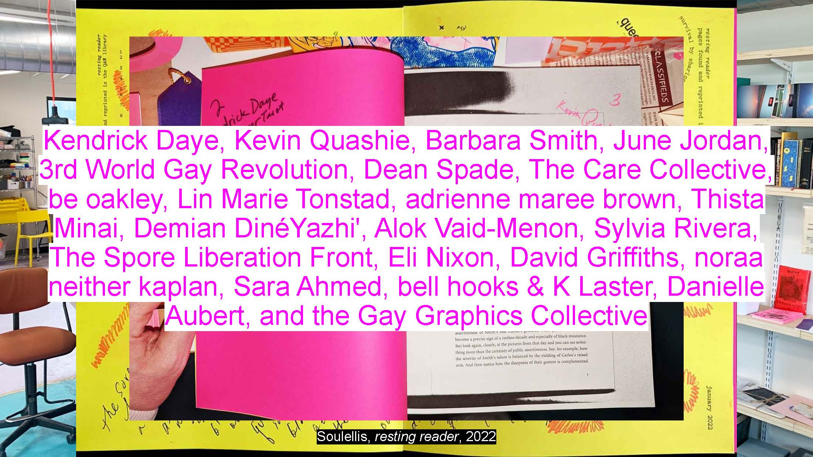
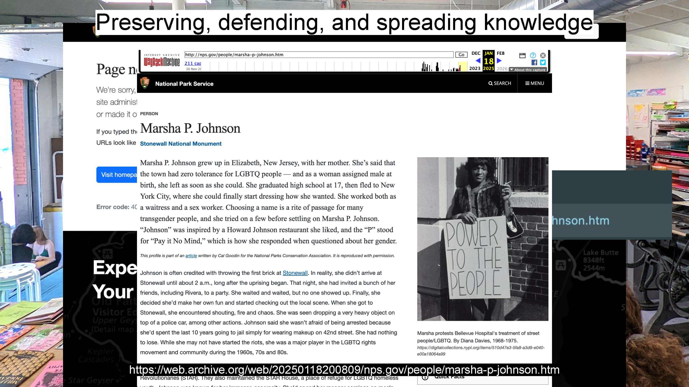
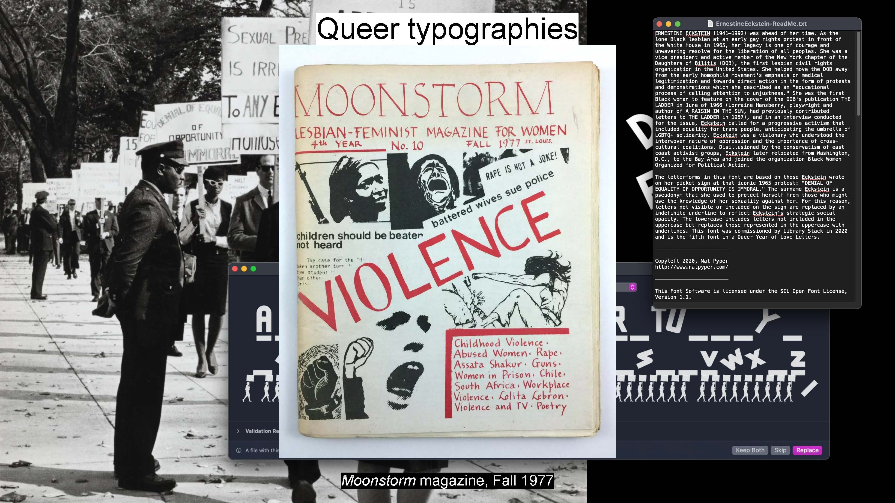
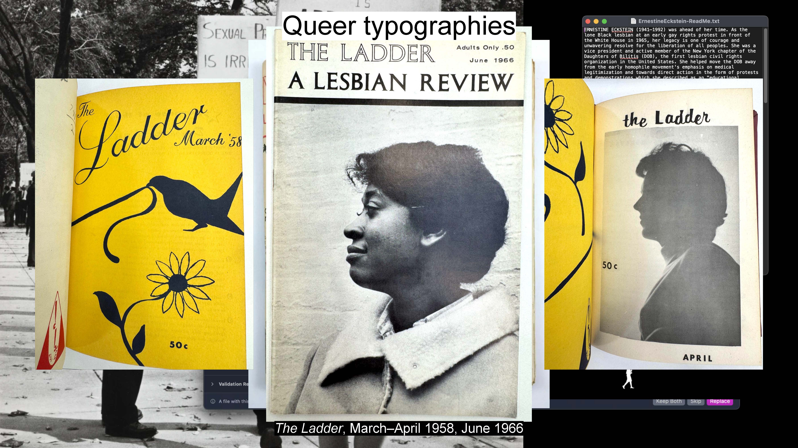

March 2025
Delivered 6 March 2025 at University of Texas, Austin
In the spirit of queer timelines, I’ve structured this talk in reverse.

We’ll get into it by going backwards, through the title. I’ll start with *sharing* first, sharing as a way to get into publishing. Then, our destination is *survival.* The survival of queer life in the archive, across time and space. I’ll conclude with survival.
So, where does survival by sharing come from? It’s a phrase that I’m using a lot lately. I love this expression, because for now, it’s the best way to describe my approach to design, to publishing, to art, activism, and life.
Here’s how I found it: one day I was at the Queer.Archive.Work studio, where I was making a publication called resting reader. I was looking for material in our library and opened up a book by Danielle Aubert on the history of the Detroit Printing Co-op. I saw this logo from Come!Unity Press, from NYC in the early 1970s. They self-described themselves as “a gay anarchist printing cooperative,” so that got my attention,
and then I looked closely at the logo, which they printed on the cover of many of their publications, and realized how beautiful this expression was. This was a group with a radical idea about freely giving away the publications they printed. The expression, as an ethos, kind of unfolded itself to me, and it’s continuing to unfold itself as time goes by, fifty years later, as I use it now to both structure my practice and unfold this talk.
I teach Graphic Design at the Rhode Island School of Design, and I ran our program for the last number of years, so you might be thinking—he must be a graphic designer! You would be partly correct. I am a self-taught graphic designer. For many years I ran a successful design office in NYC where I did a ton of brand strategy, brand identity design, and graphic design. And I don’t really show that work now, at all—sorry. The more commercial aspects of graphic design, and the powerful connections between design, capitalism, and oppression, are important to understand now, but in practice, they exhausted me. My critical perspective on this has grown to such a point that I’m not sure I’ll ever call myself a graphic designer again, but I am grateful that I did for a while, that I know how to shape and manipulate images and language, and I try to use those skills now for other reasons.
Sharing as publishing as care work
Instead of graphic design, I’d like to start this talk with *sharing* as a way to describe what I do. Sharing connects to publishing, and publishing can connect to any kind of art and design practice today—publishing as an artistic practice, as a graphic design practice, as an activism or social justice practice, and so on. But why publishing? For me it’s like this: when your medium is publishing, you’re concerned with spreading the word, whatever that word may be; you practice the distribution of ideas across networks, relationships, and community. I see this as a kind of care work, and it’s come to define who I am, my values, and what I do.
Publishing has been central for me in all of my work, including teaching. I started teaching at RISD ten years ago, with a class called Experimental Publishing Studio. And in that class one of the first ideas that we talked about was this: the community bulletin board. This is public sharing at the most basic level—DIY posting in public. The bulletin board isn’t really about graphic design, and I doubt anyone really thinks about it as publishing, and yet it’s very much a self-designed product where information is being communicated from a central hub, with intent, traveling through networks, to everyone’s benefit in the community. It is a work of design, very much about acts of publishing.
Here’s a slightly more designed version of the community bulletin board that really focuses on the act of posting. It was called a Kaliflower Board, and you would have found these at hundreds of communes around San Francisco in the late 1960s, into the early 70s. A weekly newsletter called Kaliflower was published by one of the communes and printed, bound, and then hand delivered to each location, where it was posted on the board for everyone to share. And if a message needed to go back out to the publisher, it was left in that little bamboo tube at the bottom of the board where it could be retrieved.
What a beautiful device! I actually got to see all of the Kaliflower newsletters recently, original, physical copies that had just arrived in an archive that I visited. The care and love that went into sharing here is really extraordinary, and it’s visible in these publications.

There’s something about the Kaliflower Boards that feels internet-like to me—they were like remote servers that delivered content to their local users, with the possibility of two-way communication. At that same exact moment, also in San Francisco, the very first computerized bulletin board was happening. It was an experiment called Community Memory. It wasn’t really the internet, though—it was just a single computer terminal in a record store in Berkeley, connected to a mainframe computer across the bay on Market Street. It was digital, yes, but still very much a physical, embodied experience that was shared in public space.
Anyone could sit there and type a message and post it to share with others. This was the very first time that anything like this was happening in public. Posts included things for sale, ride shares, skill-sharing, and announcements of all kinds.
It was kind of an early craigslist, back then, pre-internet, closely connected to those analog bulletin boards. But its creators saw it as something more sustainable than that, almost like a kind of responsibility, to care for community memory. It was a beautiful experiment in not-forgetting, as the founders originally described, in more poetic terms, and it was the very first of its kind.
I’m kind of obsessed with it, because as I read closely through these printouts of the original posts, I found several gay and lesbian-related posts, and I believe these may be the earliest evidence of queer organizing on a digital platform, ever, just a couple of years after Stonewall. I photographed these Community Memory printouts at the archive of the Computer History Museum in Silicon Valley, last summer.
Never-ending flow—posting, feeds, algorithms, AI
Today, community memory is more slippery. We post in public every minute of every day, on all of our devices and platforms, taking care of all of our feeds. It’s been so normalized now that we no longer think of this, and things like this, as acts of posting or publishing, it’s just a constant, never-ending flow of input and output. Each of us has our own version of this, nurturing our feeds. Posting in public is a mindless task now, where that care—and our time, and our data—is extracted for profit. So one of the goals of experimental publishing, I think, is to bring some criticality to our feeds, to slow this down and work with making public itself as a medium, both in physical spaces and on digital networks. When we connect people through our work, we can create our own publics.
If you’re interested, there’s a lot more to say about this, a lot of it coming from Michael Warner’s essay, “Publics and Counterpublics.” It’s over 20 years old but it’s such a foundational piece for me, for understanding what it means to create publics around your work—it’s a different way to get into publishing. It’s not about the publishing industry, and it’s not really about the form of our objects, like a zine or an essay or a poem or a selfie, for that matter, but about how these things circulate. And what happens when they do. Who they touch, the discourse they generate, and the communities they form.
Social media feeds are where many of us go to do that now, to circulate our material. Even though social media is fairly recent—the feed has been around for a long time; it’s a product of the industrial revolution, quickly evolving into something else now, in accelerated surveillance capitalism. I went looking for the origin of the word feed, relating to a flow of information, and it seems to have appeared suddenly in the 1840s, around the invention of the telegraph. It’s also the moment when photography first appears, as colonialism was flourishing, and as networks were forming and expanding globally. Eventually, these media technologies evolved and converged into our feeds—first as news wires, radio broadcasts, and television feeds, and now on all of our devices.
Today, we see our feeds less and less, and we don’t recognize them anymore as an accumulation of posts. We experience them more like an ambient presence. ChatGPT is just there, hovering in the background, and on our iPhones, where it’s been seamlessly integrated into Siri. The experience is becoming impossibly smooth. More and more, we engage with feeds, agents, and chatbots with natural language, rather than an interface of buttons and boxes. Natural language prompts are posted and the responses are returned seamlessly, like magic.
Those distinctions between what is or is not posting, or publishing, or public or private, or original or not, are becoming very difficult to discern. As we engage with non-stop streaming that surrounds us in a totalizing way, throughout all of our environments, we’re seeing this collision and collapse between publishing, digital networks, AI, surveillance, and misinformation.
As the algorithms get better and the surveillance and extraction become more complete, it’s becoming easier and easier to isolate and protect ourselves in our feeds, only consuming what’s already been predicted to satisfy us, produce profit for others, or worse—to oppress entire groups of people. For some, the situation is getting worse, minute-by-minute.
Resisting automation and the smoothness of design perfection
A few months ago, the design agency Pentagram published a project that featured AI in the design process—maybe you saw this. It’s a website that they designed for the US government. And they used the popular image generator Midjourney to create thousands of government-approved illustrations for the final product, called Performance.gov.
Here’s how they publicized the project in a case study back in December; this is their instagram post. They proudly featured their use of AI, and their choice to incorporate automation directly into the design process.
They even detailed how they did it in a step-by-step narrative, which faced enormous backlash online; there are thousands of comments on this post. Critics raised all kinds of ethical issues, as you can imagine, starting with labor and the idea of undercutting wages, and taking work away from actual human illustrators, to the lack of consent and copyright issues involved in using image generators, to the enormous costs to the environment involved with AI.
Many said that the end-product really suffered as a result, and that it was poor design work; I would agree. Pentagram and their supporters defended the project, claiming that the use of AI is inevitable, and this was efficient. That the work was automated because there was no budget for illustrators at this agency; and that, faced with an impossible task, they did what they could to deliver what was right.
Partner Paula Scher said this in response: “The whole notion of the site was to correct (government bureaucracy) by creating a site that could run all by itself. . . . [and], we will use the best tools available to us to accomplish the ideas we have.”
Just a couple of months later, most of their work at performance.gov is gone. What was a website for tracking government strategic reporting has been stripped away by the current administration, not just of almost all of the illustrations, but all of its content too. The site appears to be dead, only serving as an archive.
In comparison, let’s look at this, which just launched a couple of weeks ago—also a US government reporting website, keeping us posted with the “latest work,” with efficiency right there in its name. This is DOGE.gov, of course—the Department of Government Efficiency. The design decisions involved here, compared to the Pentagram project, are striking. AI is no longer decorating the website;
instead, it’s been incorporated into the functioning of the agency itself, reportedly being used to read millions of emails and make mass firing decisions. A very different aesthetic is at work here—black, stripped down, minimal, like it’s been generated by an algorithm. Instead of using automation for illustrations, the information itself is automated—it’s a generic X-like feed. No need for Pentagram here. How quickly the problem has shifted; how the need for professional design services was eliminated, overnight, in the name of efficiency. This is the logic and aesthetic of techno-accelerationism right now: templates, code, and algorithms, period.
Meanwhile, here’s what others are making with AI; this is called slop, and while much of it is cringe-worthy, some of it isn’t, and it’s getting more and more effective in its ability to evade us, to manipulate perception, or even to shape public opinion when it’s fully obvious that it’s been artificially generated. These tools are being embedded in all of our spaces, and they don’t require any special training—certainly not a degree in art or design.
Regardless of where you are on the political spectrum, it’s a confusing time for design. I think it’s crucial for us to try to understand how all of this works, as the landscape changes minute by minute.
For designers, we find ourselves in a very particular contradiction here. How do we use these tools? How do we participate in this? How do we continue to efficiently design these most perfectly efficient interfaces, knowing what we do? As this poster says, does our craft and passion still make sense?
These are questions that I really struggle with, as an educator, as an artist, as someone who’s deeply invested in how design shapes our political condition right now. My own response takes the form of refusal: to resist the smoothness and ease of efficiency, automation, and design perfection. I make this demand of myself and in my teaching. It doesn’t mean that I don’t use technology—there’s no avoiding it, and I love it. It means always questioning, always embracing criticality, and choosing to deeply examine the less visible ideologies that lurk behind the design systems that govern how we live and work.
Time travel
It also means paying attention to those who haven’t always been at the center, now and in the past. For me this means looking at archives and using them as *time machines,* to reexamine what came before us, and to establish contact with ancestors. To see how others have resisted and persisted by making public against the grain, by “performing publishing” in their lives. What can we learn from their ongoing struggles towards liberation, through their acts of making public? What kinds of urgent artifacts did they make during uncertain times, under oppression?
I’m especially inspired by Barbara Smith, who was part of the Combahee River Collective in Boston in the 1970s. Combahee was an organization of Black feminist lesbian women who met regularly as a group to discuss the intersections of race, gender, heteronormativity, and class, arguing for the liberation of Black women.
They published a statement, arguing that the focus of white lesbian organizing ignored class and race. Barbara Smith talks about photocopying the statement and bringing it to a UN conference in Nairobi, Kenya in 1985 in order to distribute it by hand to Black organizers from all around the world. A real moment of DIY radical publishing.
At the same time, Barbara Smith co-founded Kitchen Table: Women of Color Press, which went on to publish powerful materials throughout the 1980s. There’s a lot to learn from her and her work, but specifically around publishing, there’s this moment that I want to share. During an oral history, she talked about a conversation she had with the poet Audre Lorde, about why she started Kitchen Table. She said, “As feminist and lesbian of color writers, we knew that we had no options for getting published, except at the mercy or whim of others, whether in the context of alternative or commercial publishing, since both are white-dominated.” When there seemed to be no other options, they created their own.
The Black Panther newspaper is another remarkable example of taking control as a matter of survival, of radical publishing that exists to form and sustain and strengthen survival networks. In order to communicate directly they created their own distribution system, circulating the newspapers themselves openly in public space. In the moment of exchange was an opportunity to engage directly, person-to-person, on a street corner, in a laundromat, at a diner.
This is how making public can get radical, how publishing as an independent pursuit can be used to empower its authors and organizers and distribute that power through the materials that they circulate. Radical publishing has been used throughout history as a form of survival, as a way to detach from mainstream structures of oppression in academia or commercial publishing, where whiteness, heteronormativity, capitalism, and settler colonialism are continually normalized.
Archives offer the possibility of survival
While searching in an archive recently, I encountered the story of L.S. Alexander Gumby, who opened Gumby’s Book Studio in 1926 in Harlem, New York. Gumby was an openly gay Black man who documented African-American history during the Harlem Renaissance,
by saving newspaper clippings, ticket stubs, artwork, event programs, letters, poetry, and other ephemera. He preserved his collection in carefully constructed scrapbooks, which I see as a kind of wayward publishing practice.
Gumby would gather friends and strangers at the studio for salons, parties, and performances where he would share and discuss his work. There, in that queer space, Gumby’s Book Studio was a living archive, cared for by its creator but kept alive through the relationships that formed and gathered around the artifacts.
Some of that material can now be viewed online at Columbia University’s Library, where Gumby left his collection of over 300 scrapbooks in 1950. Networks of community memory continue to emerge from this work, now that it’s on the network. Looking at some of the pages, I found one plainly titled “Your History,” the words cut from a headline, above a few snippets about Black inventors and performers;

another page contains three striking photographs of Maurice Hunter, a Harlem-based performer and artists’ model.
Even though we can see these images of Gumby’s scrapbooks online, I’m trying to imagine what it was like in 1926, inside Gumby’s book studio, where people gathered together with his work, and so I’m thinking about queer materials in queer hands. That’s how another archivist, Ben Power, describes his approach to archival justice—“telling the truth about people who are alive today and about people who are already dead.”
Queer material in queer hands
Ben is a trans man who lives inside his archive—the Sexual Minorities Archive—in this pink house. That’s my colleague Tycho, who came with me when I visited recently.
We’re in Holyoke, MA, and this is Ben on the left, and a photograph of Ben from 1988 on the right, hanging in his house. We saw a lot of the queer media that he’s been collecting for 50 years, things that would otherwise be discarded, including matchbooks, postcards, buttons, cassette tapes, posters, and pulp fiction novels. His house contains over 20,000 items.
There’s even a portion of a graffiti-covered wall from a queer bookstore that was demolished—the wall was headed to the trash, before it was saved by Ben, who now stores it in his garage.
In finding materials to bring back to the house, he says that “the collection is then almost an extension of my body and where my body goes … also, it’s a matter of control and being in my hands, which are transgender hands.”
As he describes, the only safe place for such a collection is to take care of it in spaces where we live and work; “I’m queer, the curator, [and] you’re queer, the visitor—that’s the perfect environment for growth because we’re asking our own questions about our own lives. Nobody’s telling us how to look at our lives. We’re looking at it from queer angles … and to me it’s very political. Queer materials in queer hands is the strategy that, through education, helps get our people closer to equality.”
So I’ve been thinking about the remarkable, porous spaces of Gumby and Ben Power, and their hands. I’m thinking about bodies in the archive, about living in the archive, about handling queer material with queer hands, as I myself travel and visit these physical archives and spaces to become entangled.
Queer.Archive.Work

<
Now I’ll tell you a little bit about my own publishing practice, as well. It changed dramatically in 2018, practically overnight, when I purchased a risograph printer, giving me the ability to print and produce materials myself. Just about everything that I’ve made since then has been under the name Queer.Archive.Work.
This project has really shifted who I am and how I work, a pivot that’s directly inspired by the examples I’ve mentioned today—Barbara, the Panthers, Gumby, and Ben, and others—a more political view of what’s possible with publishing and archives, how one spreads the word, and how we can do more, with collective work. These are all collaborative publications, working with one or more contributors, sometimes over 100, like in Urgency Reader 2, which was produced at the very start of the pandemic.
<
Most of these are unbound publications, which means everything’s loose. Queer.Archive.Work #3 is an assemblage of prints and zines, and they can all come apart, denying the reader any one fixed read. The idea here is really to forfeit control, from my role as editor, to the reader, encouraging them to stay with the mess, and to get comfortable with a non-linear space, so they can explore a multiplicity of voices, as they wish, in their own time.
When QAW #3 launched in 2019, I designed an installation at the NY Art Book Fair so that the mess would read as an invitation, perhaps only legible to some. This wasn’t about projecting an easily understood queer aesthetic or style, but about inviting specific readers in to do their own work, and shape the material in unexpected, unpredictable ways.
I love these publications, and the communities and agreements that are formed within them and from them, as we learn to put our work in conversation together.
In 2020, I made a major decision to move the risograph printer into a new studio, and to transform Queer.Archive.Work from a publishing *project* into a shared publishing *space.* Queer.Archive.Work became a non-profit organization, with a mission to support queer publishing, and to center queer, trans, and BIPOC voices who need access to studio space and publishing tools and community.
I no longer own the risograph—it belongs to the non-profit now—and it sits in our library as the heart of the space, as a tool of empowerment. It’s a way for us to make public and spread the word on our own terms, outside of traditional publishing and art world spaces.
Now we’re 40 people, and we’ve built a new studio together. What a beautiful moment this has been! Queer.Archive.Work now has a huge garage door that opens up the whole space directly to the street. We can distribute things, hold events, and experiment with new ways of making public.

The space changes every day, depending on who’s here and what’s happening. It’s a queer place for all of our residents, members, and organizers, without most of the pressures encountered in academia and traditional art world spaces, or even in some alternative art spaces. We just elected a brand new board of directors, seven new people who are bringing so much new life and energy to the organization, which will sustain us for a while and guide us into the future.
A sanctuary from the spectacle

The whole project has been such a sanctuary for us, far away from spectacle, but it’s not a hiding place. We gather, hang out, browse, read, write, and rest, in a porous presence with each other. We’re actively building support structures for living and working in crisis and thriving in community. We organize, learn, teach, practice, print, make, nourish, and laugh together.
This is new work for me. I grew up in New York in the 1970s and 80s, raised to believe in the individual. I dreamed about being a successful artist or designer or business person. What I was taught was this: trust no one, protect yourself, be ambitious, rise to the top. So, I’m really trying to dismantle this now in my work, and shift from *me* to *we.* No rising, just reaching around and stretching with others.
Collective work is hard, but it’s happening. I’m learning about communal power. We’re learning to collaborate in new ways, create new agreements, and to build the print production studio of our dreams.
I don’t think there’s any real way to do it except to do it. It’s queer work, because each time we gather together without guarantees or predictable results or a hero leading the way forward, we push up against heteropatriarchy. We refuse to play by those old rules.
<
An important part of the project is our non-circulating library, which has grown to over 2,000 items since we began, with zines and books and examples of experimental publishing that I’ve been collecting and that people now send to us and contribute when they print in the space. It’s a living archive—queer material in queer hands—that continues to grow out of the work that happens in the space.
June Jordan wrote about the library as a sanctuary from the spectacle. This is our library today, feeling so spacious and welcoming, a real sanctuary. A place to grow the collection and let it expand into a shared destination, a place to navigate terms like queer, and archive, and work, and imagine new ways to think about them.
Another thing we do in the library is publish, of course. We have a full screen-printing studio and now, several risograph printers right there next to the shelves in the library, and a full rainbow of color ink drums.
The risos are connected to a networked computer so we can send PDFs to print but I also really like to scan things directly on the flatbed. Sometimes I don’t use InDesign, or grids, or much design at all, just the riso printer itself as a camera that sees whatever I bring to the glass. It’s such a beautiful machine, and I can use it to scan the library, one page at a time.
That’s what I did when I made resting reader, mentioned at the very start of the talk. All of its pages come from our library shelves. I printed 100 copies, and bound them on our perfect binder.
The texts came together quickly while covid was raging. We had to stay isolated at a moment when we really needed to engage, so I found other ways to connect in the sanctuary.

Gathered together in resting reader are these partners in time travel. This book is evidence of a moment, an ongoing moment. It’s time travel because it contains the past, but it’s about the future. Welcome to its future.
I decided to put survival by sharing on the cover of resting reader—that was the first time I used it. I’m trying to revive that Come!Unity Press phrase now, as a guiding ethos, in works like this, in this talk, and in everything we do at the Binch/QAW studio.
Maintaining evidence of life
This idea of saving and holding onto the things that would otherwise be discarded—collecting and preserving evidence of life, whether it be Black life, trans life, queer life, immigrant life—is the incredible lesson of bad archives, shown to us by Gumby and Ben, and it’s what we try to manifest on a daily basis at Queer Archive Work.
Preserving, defending, and spreading knowledge
Preservation is crucial right now, as we see our own US federal government working to undo the grammar of queer, trans, and gender-nonconforming life on a daily basis. This is happening in all kinds of ways, including the cruel manipulation of language that erases decades of progress and visibility in an instant, as scripts are deployed to crawl across .gov websites, tagging and deleting banned vocabulary words and removing letters from acronyms. While writing this talk, I learned that the National Park Service, under the direction of the Trump administration, has removed the webpage for Marsha P. Johnson from the official website of the Stonewall National Monument.

If you didn’t know, Marsha was one of the original transgender activists at the Stonewall riots in 1969, and she played a central role in trans activism through the 70s and 80s. There is no Stonewall or gay liberation movement without Marsha and the other trans people who were there. Using the Internet Archive we can go back and see the page as it appeared on January 18, before it was removed.
A plurality of ways to organize the world
This comes just after the word “transgender” and the letters “T” and “Q” were removed from “LGBTQ” from all of the National Park Service websites, including Stonewall.
At the same time, the US State Department announced that it will no longer offer the gender marker “X” as an option on passports for non-binary, intersex, or gender-nonconforming citizens.
And just last week, a bill was approved to remove the words “gender identity” from Iowa’s Civil Rights Law, the first time in US history that civil rights have been taken away after assigning them to a protected class. It’s exhausting. Evidence and protection of queer & trans life is being erased from federal laws, policies, websites, archives, documents, and databases, in real time. These manipulations occur without agreement—rather, they operate so painfully because of the cruel conditions of disagreement, denial, and erasure that they create. No one should ever be left out of how they are named (or unnamed), spoken about (or silenced), or labeled (or not). No one should ever be left out of the crafting, creation, and circulation of their own stories, or deciding how to be “read,” or not. Agreements are currently under attack. Targeting the most vulnerable through the erasure of data, language, and protections has happened all throughout history. I’m so scared for our ancestors, and for all queer kin right now, especially queer, trans, and gender-nonconforming people of color.
As we prepare to become future ancestors, we need to bring with us and speak to future kin with the precious artifacts that we collect, make, publish, and preserve, as evidence of life lived—our monuments, our bios, our links, our photographs, our zines, our flags, our names. Our data must be preserved; the names named, the words spelled out. Dr. Williams, on the right, says: “Fascists, authoritarians, dictators of all stripes destroy archives—books, museums, databases, &c—because those things provide windows onto a plurality of other ways we might organize the world. And so preserving, defending, and spreading that knowledge harms those regimes.”
Weaponized typography
These are design issues playing out in our archives; they’re decisions that erase language and life. I would go even further and say that these are also typographic struggles—that we see the weaponizing of language playing out in how and if language, letters, letterforms, and symbols appear, as a way to create the conditions for cruelty. In these cases, it’s about regulating and policing how language appears in order to force the most vulnerable voices out of written history and off the timeline, making it easier to deny their right to exist.
Queer typographies
Where there is erasure, there are also survival networks, making and circulating things that repair, inform, and express in resistance. Right now, this is my work: how new kinds of typography, new forms of reading and writing, appear and emerge from liberated language—what I’ve been calling queer typography, or the plural—queer typographies. I’m working on a book about this, to be published by Bikini Books, a new publisher on design and politics based in Portugal. A lot of the archival visits I’ve been doing and the images I’ve been showing you today are research for this book, which comes out in Fall 2026.
My work around queer typography started a few years ago when I was invited to deliver a talk at the Type Directors Club. My talk was titled, What is queer typography? At the time, I didn’t know, but I wrote the question, and the talk, as a way to figure it out.
I also published it online as an essay, and made a zine, and it’s been republished, translated into other languages, and circulated far and wide. I get emails about it all the time, from students around the world who ask me about queer design and typography. The essay introduces some really basic questions: how might type resist capitalism? if we look at typography away from the traditional design canon, and focus on who and what’s been categorized as “failure”—specifically, how language is shaped under oppression, by those who are most left out of design history—what might we learn?
In that essay, I interviewed nicole killian and Nat Pyper, and in response to my question—what is queer typography—we arrived here: that there is no queer typography. Only queer acts of reading and writing. This was kind of a revelation for us, in that moment—and I thought: this makes so much sense. The focus is not on how the language looks or what font to choose or something that we might call a style. It’s about action. It’s about those moments when language is used to resist.

It’s about what I mentioned earlier—resisting the smoothness of design perfection, slowing down the read, and introducing friction. How do reading and writing work when we step outside of the feed and flow of surveillance capitalism? As it turns out, these moments, these queer acts of reading and writing, are most easily found in archives, but also in contemporary practice.
<
An incredible example of this is Nat Pyper’s work. For the last couple of years, they’ve been designing a project called A Queer Year of Love Letters. It’s a set of 9 typefaces, each one based on a moment in queer history. To launch the collection, they wrote a love letter that positions the work. Here’s part of it:
“I began making these fonts in order to rapidly document and disseminate the work and ideas that they cite. I pack these histories, or part of them, into fonts for a couple of reasons.”
“First, font files are durable. OpenType fonts (.OTFs) have persisted in their ubiquity since the late ’90s and maintain their utility as a nimble and reliable format.”
“Second, fonts have the capacity to contain a hefty amount of information within a tiny package. In under 100 kilobytes, an entire alphabet! In the font’s metadata, a manifesto! Fonts then function as a useful format for ferrying information from one place to another.”
This font in A Queer Year of Love Letters is called Ernestine Eckstein. If you don’t know about Ernestine, she was a Black lesbian woman who protested in front of the White House in October 1965—she was the only Black woman at this gay rights protest. This photograph shows her holding up her sign at the demonstration, which reads: “Denial of Equality of Opportunity is Immoral.”
Nat based the font on Ernestine’s lettering on this sign. For me, this is queer typography—not because of what it looks like, although they are interesting letterforms—but because it points back in time to a powerful moment that is not well documented, and not widely known, and frankly, in danger of erasure, even today. And now it’s a font, which means it points to the future as well, because it’s freely available and when you download, read the text file, and type and design something new, you send that message into the future with Ernestine’s voice and story.

There are 8 other moments like this in A Queer Year of Love Letters and I really encourage you to check them out, download the fonts, and use them in your work. Another one is based on a lesbian magazine from St. Louis called Moonstorm, which we will be looking at tomorrow in our workshop, because there are physical copies here on campus at the Briscoe Center. There’s a book about Nat’s project that’s being published by Inventory Press, out in May, and I have an essay in there, called “Quantum Queerness,” so look out for that too.

I wish I could take you through all of the most incredible artifacts I’ve been finding in my research, and that I’m writing about for the book. To highlight just a few, here is Ernestine on the cover of The Ladder, the first lesbian publication in the US, and she is one of only 2 Black women that they featured on their cover in their 12 year history.
And here’s a remarkable back page from Come Out!, a newspaper published in the 1970s by the Gay Liberation Front, featuring the Third World Gay Revolution.
And here is a newsletter called Idle Sheet, written and designed by Marcel Christian LaBeija, and distributed by hand in the ballroom scene in Harlem in the 1980s.
The typography in the film Paris Is Burning, directed by Jennie Livingston, about the ballroom scene in the 1980s. The film came out in 1990.
And of course the enormous amount of material, graphics, and campaigns produced by Gran Fury and ACT UP during the HIV/AIDS crisis.
This zine QUEERS READ THIS by an anonymous group called Pink Tank.
The zine JDs, created by GB Jones and Bruce LaBruce.
This is Gendertrash, a remarkable trans zine from the mid-1990s.
HOMAN, the gay and lesbian magazine from Iran in the very early 2000s,
A la brava, trikone for the South Asian gay and lesbian community in the US, and Bombay Dost, from India.
and Bye Bye Binary, a collective of type designers working now in Brussels to actually change the French language, developing new fonts with inclusive non-binary glyphs. I got to visit them this past fall to learn more about their beautiful work.
There’s just so much. What I’ve found by looking at this vast array of materials, and what I’m writing about for the book, is that when we open up design history beyond the traditional white, cis-male canon, we find a spectrum of legibilities. There are so many different kinds of reading and writing, especially when we look at how language is shaped in liberation. And this is missing from design education right now, which operates under the misguided belief that there is an idealized, universal reading experience, and there is such a thing as perfect typography. This isn’t true, no matter how hard we read Bringhurst. Rather, we’re all negotiating visibility and legibility in our lives in different ways, and this is reflected in how we design and communicate. Sometimes it’s not safe to be read clearly, and we need to just blend in, and assimilate. Other times, amplification is necessary, and the volume is turned way up. A need to shout out for everyone to hear. Interestingly, and I showed many examples of this today—we sometimes need to mix up our legibilities, a kind of hybrid non-conforming approach to reading, in order to signal visibility to some, but not others. This is not a normative approach to typography, and it’s certainly not how we teach it at RISD, where we tend to separate these ideas into a experimental vs professional binary. So I’m trying to craft something different here with this book, a way to do design and typography that’s about plurality, resistance, negotiating visibility, and about the care and the agreements that connect designers, authors, and readers in community, when we make things to share, whether it be a typeface, a book, a game, a zine, or a protest sign.
All possible futures
And I guess I’d just like to leave you all with this final note, about survival by sharing. I know that many of us, and many of you here in this room, listening to this talk today, are going through a range of emotions right now about the long, ongoing moment of crisis that we’re in—however you define crisis in your life. It is certainly not the same for all of us. Survival can mean so many different things. Regardless of your politics, these are confusing, difficult times, especially here in a place like Texas. Right now, all eyes in the US are on your state, as I’m sure you know, where all kinds of limits are being tested with regards to language in academia, race, diversity, reproductive rights, and immigration. As a design educator, my deepest wish is to share this with you: that you might be open to other histories, other voices, other ways of seeing, reading, writing, and making. And of other futures. We need this so badly right now. Whatever your networks are, the people for whom you care, whether you call them social networks, or survival networks, or queer kin, or community, or simply family—think about how to connect what you’re doing here in design school to the needs and desires of those around you, who you care about, as you build and share all of your possible futures.
Thank you.